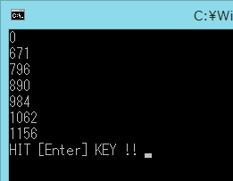

VC++2012の新機能の一つである「自動ベクタライザ(Auto-Vectorizerr)」の動作を確認しました。
結論を先に書くと、高速化されているように見えません。そんなはずはないので追跡評価が必要です。
#include <stdio.h>
#include <tchar.h>
#include <iostream>
#include <string>
#include <Windows.h>
using namespace std;
int _tmain(int argc, _TCHAR* argv[])
{
const size_t n=100000000;
static int a[n], b[n], c[n];
DWORD dwStartCount = GetTickCount();
cout << GetTickCount() - dwStartCount << endl;
#pragma loop(no_vector)
for (int i = 0; i < n; ++i){ // 18行目
a[i] = b[i] + c[i];
}
cout << GetTickCount() - dwStartCount << endl;
for (int i = 0; i < n; ++i){ // 23行目
a[i] = b[i] + c[i];
}
cout << GetTickCount() - dwStartCount << endl;
#pragma loop(no_vector)
for (int i = 0; i < n; ++i){ // 29行目
a[i] = b[i] + c[i];
}
cout << GetTickCount() - dwStartCount << endl;
for (int i = 0; i < n; ++i){ // 34行目
a[i] = b[i] + c[i];
}
cout << GetTickCount() - dwStartCount << endl;
#pragma loop(hint_parallel(4))
#pragma loop(no_vector)
for (int i = 0; i < n; ++i){ // 41行目
a[i] = b[i] + c[i];
}
cout << GetTickCount() - dwStartCount << endl;
#pragma loop(hint_parallel(4))
for (int i = 0; i < n; ++i){ // 47行目
a[i] = b[i] + c[i];
}
cout << GetTickCount() - dwStartCount << endl;
/*========*/
/* 後処理 */
/*========*/
{
string str;
cout << "HIT [Enter] KEY !! " ;
getline(cin, str);
}
return EXIT_SUCCESS;
}
実行結果は以下の通り。

正しく動作すれば4倍、8倍、などの高速動作するするらしいのですが、現時点では
Auto-Vectorizer は効いているとはいえませんね。
コンパイルオプションは次の通り。
| cl /Yu"stdafx.h" /GS /Qpar /GL /analyze- /W3 /Gy /Zc:wchar_t /Zi /Gm- /O2 /sdl /Fd"Release\vc110.pdb" /fp:precise /D "WIN32" /D "NDEBUG" /D "_CONSOLE" /D "_UNICODE" /D "UNICODE" /errorReport:prompt /WX- /Zc:forScope /arch:SSE2 /Gd /Oy- /Oi /MD /Fa"Release\" /EHsc /nologo /Fo"Release\" /Fp"Release\test_AutoVectorizer.pch" /Qvec-report:2 /Qpar-report:2 |
コンパイル時の統合環境出力は以下の通り。
|
test_autovectorizer.cpp(18) : info C5002: ループはベクター化されません。理由: '1400' test_autovectorizer.cpp(23) : info C5001: ループがベクター化されています test_autovectorizer.cpp(29) : info C5002: ループはベクター化されません。理由: '1400' test_autovectorizer.cpp(34) : info C5001: ループがベクター化されています test_autovectorizer.cpp(41) : info C5002: ループはベクター化されません。理由: '1400' test_autovectorizer.cpp(47) : info C5001: ループがベクター化されています test_autovectorizer.cpp(18) : info C5012: ループは並行化されません。理由: '1008' test_autovectorizer.cpp(23) : info C5012: ループは並行化されません。理由: '1008' test_autovectorizer.cpp(29) : info C5012: ループは並行化されません。理由: '1008' test_autovectorizer.cpp(34) : info C5012: ループは並行化されません。理由: '1008' test_autovectorizer.cpp(41) : info C5011: ループが並行化されています test_autovectorizer.cpp(47) : info C5011: ループが並行化されています |
自動ベクタライザ を有効に機能させる条件や使い方などがあるのかもしれませんが、今回はこの機能による高速化を確認することができませんでした。
何かわかったら続報を記載したいと思います。
本ページの情報は、特記無い限り下記 MIT ライセンスで提供されます。
| 2023-04-19 | - | ページデザイン更新 |
| 2012-11-15 | - | 新規作成 |